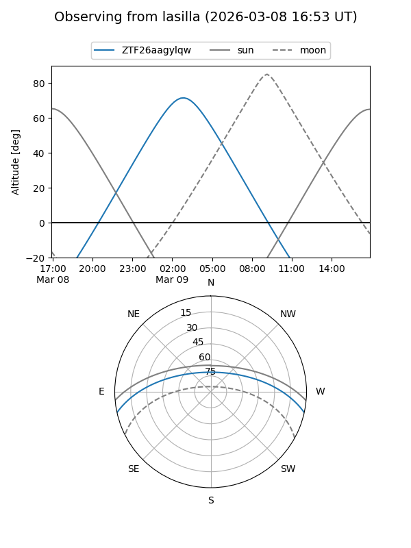
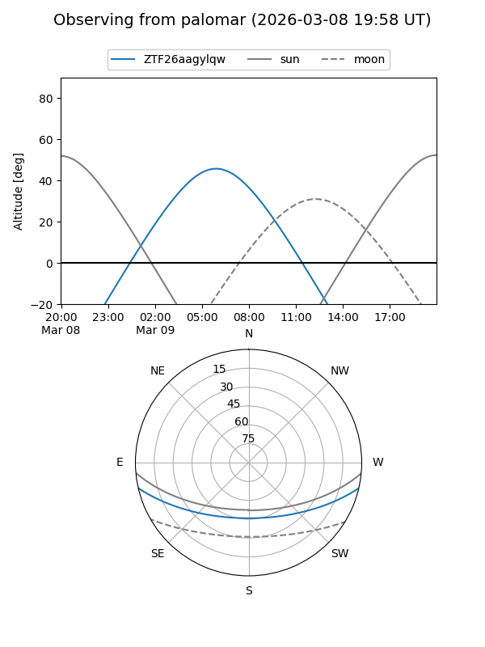

ZTF26aagylqw
Target ZTF26aagylqw at 2026-03-09 07:49
Aliases and brokers:
FINK: link
Lasair: link
ALeRCE: link
alt names
ZTF26aagylqw (ztf,fink_ztf)
Coordinates:
equatorial (ra, dec) = 138.2307,-10.75680
equatorial (HMS+DMS) = 09:12:55.38,-10:45:24.47
galactic (l, b) = (240.9029,+24.89973)
Flags:
Photometry:
last ztfg=18.94
1 ztfg detections
Lightcurve
Visibility


Additional plots